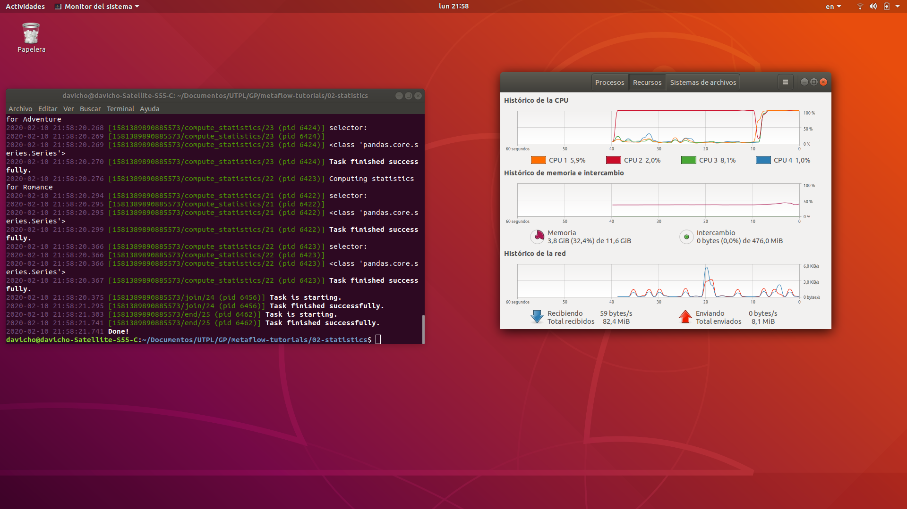

from metaflow import FlowSpec, step, IncludeFile
Se procede a importar los modulos a utilizar desde Metaflow
def script_path(filename):
import os
current_folder = globals()['_dh'][0]
filepath = os.path.join(current_folder,'movies.csv')
return os.path.join(filepath, filename)
Se implementa la funcion os.path.join, conveniente para obtener la ruta del directorio de una manera mas facil. Esto permite utilizar el tutorial desde cualquier directorio
class MovieStatsFlow(FlowSpec):
movie_data = IncludeFile("movie_data",
help="The path to a movie metadata file.",
default=script_path('movies.csv'))
De manera similar a los Parametros, se puede definir un archivo de datos para incluirlo como entrada. Metaflow versiona el archivo y lo hara accesible a todos los pasos directamente a traves del objeto self
@step
def start(self):
import pandas
from io import StringIO
# Cargar la data mediante pandas
self.dataframe = pandas.read_csv(StringIO(self.movie_data)) #StringIo permite leer cadenas como archivos
# La columna 'genres' tiene una lista de generos para cada pelicula
self.genres = {genre for genres \
in self.dataframe['genres'] \
for genre in genres.split('|')} # Compresion de diccionarios
self.genres = list(self.genres) #Convierte el diccionario en lista
# Se quiere calcular algunas estadiscitas para cada genero.
# El argumento 'foreach' permite hacer los calculos en paralelo
self.next(self.compute_statistics, foreach='genres')
En el step start se comienza por analizar el CSV y a este extraer la informacion necesaria y almacenarla en un diccionario de Python. La lectura del CSV se realiza mediante la herramienta Pandas
En el metodo self.next se ejecutan pasos paralelos a travez de ramas. La palabra clave foreach
@step
def compute_statistics(self):
# Encontrar todas las
self.genre = self.input
print("Computing statistics for %s" % self.genre)
# Seleccionar todas las peliculas que pertenezcan al genero especificado.
# Crear un marcoo de datos con estas peliculas, y solo con las columnas necesarias
selector = self.dataframe['genres'].\
apply(lambda row: self.genre in row) # Funcion anonima para recorrer cada elemento de la lista genres
self.dataframe = self.dataframe[selector]
self.dataframe = self.dataframe[['movie_title', 'genres', 'gross']]
# Obtener estadisticas sobre la taquilla de estos titulos (gross)
points = [.25, .5, .75]
self.quartiles = self.dataframe['gross'].quantile(points).values
# Unir a los resultados de otros generos
self.next(self.join)
El step compute_statics se ejecuta de manera paralela en funcion de foreach. Obtiene las peliculas que sean del genero especificado.
Luego se obtienen las estadisticas de la taquilla de los titulos que estan en el dataframe.
En el metodo self.next se unen los resultados de los otros generos despues de que la ejecucion en paralelo del compute_statics termine
@step
def join(self, inputs):
# Merge results from the genre specific computations.
self.genre_stats = {inp.genre.lower(): \
{'quartiles': inp.quartiles,
'dataframe': inp.dataframe} \
for inp in inputs}
self.next(self.end)
El step join une los resultados de las ramas paralelas combinandolos en un diccionario. Estos datos seran utilizados en el siguiente ejemplo como informacion base para generar una lista mejorada de peliculas recomendadas.
Al ultimo apunta al paso final del programa
@step
def end(self):
"""
End the flow.
"""
pass
En el step end en general no realiza ninguna accion, pues el presente codigo es previo a la ejecucion del siguiente ejemplo, dejando listos los datos a utilizarse
if __name__ == '__main__':
MovieStatsFlow()
Sentencia para empezar la ejecucion del programa

En la imagen anterior se puede visualizar la correcta ejecucion del programa, como tambien el uso de los cuatro nucleos del computador empleado, como evidencia del trabajo en paralelo de Metaflow